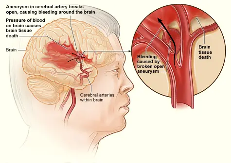
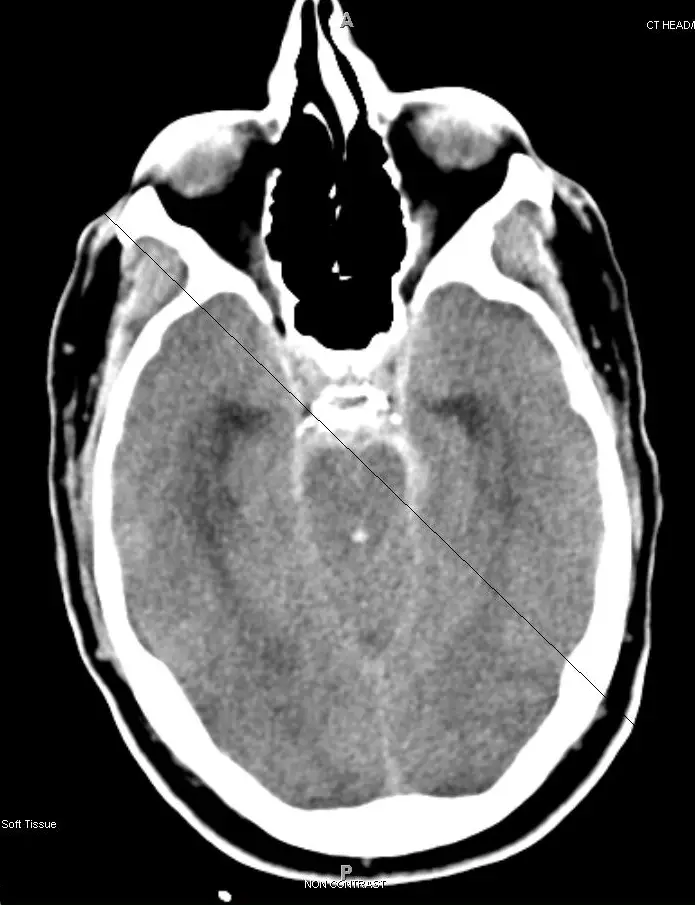

DX.6 — Hémorragie sous-arachnoïdienne 🚩 E3
L’hémorragie sous-arachnoïdienne (HSA) anévrismale se révèle par une céphalée brutale et un syndrome méningé sans fièvre, et elle tue environ un patient sur cinq en SuisseS3S1. Le scanner cérébral sans contraste, complété par l’angioscanner et au besoin par la ponction lombaire, confirme le diagnosticS1S5. L’occlusion précoce de l’anévrisme et la nimodipine protègent contre la nouvelle rupture et l’ischémie retardéeS2S9.
Ce cours DX.6 reprend les sources citées ; aucun médecin ne l’a encore validé cliniquement.
1. Définition
L’hémorragie sous-arachnoïdienne se définit par la présence de sang dans l’espace sous-arachnoïdien, que le scanner cérébral sans contraste met le plus souvent en évidenceS5. Sa forme anévrismale résulte de la rupture d’un anévrisme intracrânienS2.
2. Épidémiologie (Suisse, puis Europe)
En Suisse, le registre national Swiss SOS (Swiss Study on Subarachnoid Hemorrhage) a mesuré une incidence de 3,7 cas pour 100 000 personnes par an entre 2009 et 2014S3. Les femmes formaient 65,5 % des 1787 patients, et la létalité atteignait 22,1 % à un anS3. L’Organisation européenne de l’accident vasculaire cérébral (ESO) donne une incidence globale d’environ 9 pour 100 000, avec des valeurs allant jusqu’à 20 dans certains paysS6. Les chiffres suisses puis européens et la probabilité devant une céphalée brutale complètent ces données.
Chiffres utiles : Suisse, puis Europe
| Donnée | Valeur | Lieu, période | Source |
|---|---|---|---|
| Incidence de l’hémorragie anévrismale | 3,7 pour 100 000 personnes par an | Suisse, 2009 à 2014, registre national | S3 |
| Patients enregistrés | 1787 patients consécutifs | Suisse, 2009 à 2014 | S3 |
| Femmes | 1170 patientes, soit 65,5 % | Suisse | S3 |
| Vie indépendante à un an, échelle de Rankin modifiée de 0 à 2 | 1042 patients, soit 58,8 % | Suisse, suivi de 91,3 % | S3 |
| Survie dépendante, Rankin de 3 à 5 | 185 patients, soit 10,4 % | Suisse | S3 |
| Létalité | 20,1 % à la sortie, 22,1 % à un an | Suisse | S3 |
| Incidence publiée | 5 à 20 pour 100 000 personnes-années | Revue suisse, 2014 | S2 |
| Part des accidents vasculaires cérébraux | Environ 5 %, mais un quart des années de vie productive perdues | Revue suisse, 2014 | S2 |
| Décès avant l’hôpital | Au moins un patient sur huit | Revue suisse, 2014 | S2 |
| Incidence globale | Environ 9 pour 100 000, jusqu’à 20 dans certains pays | Europe, 2013 | S6 |
| Mortalité sous traitement conservateur | 50 à 60 % dans les premiers mois | Europe, 2013 | S6 |
| Récidive mortelle d’un anévrisme non traité | Environ un tiers des patients dans les 6 mois | Europe, 2013 | S6 |
Le registre suisse juge cette incidence plus basse qu’attendu et y voit la marque d’une baisse mondiale des admissions pour rupture d’anévrismeS3. L’hémorragie touche une population plus jeune que l’infarctus cérébral ou l’hématome intracérébral, ce qui explique le poids des années productives perduesS2.
Probabilité d’hémorragie devant une céphalée brutale
| Situation | Probabilité d’hémorragie | Lecture | Source |
|---|---|---|---|
| Céphalée atteignant son maximum en 1 heure au plus, intensité de 8 à 9 sur 10 | 5 à 10 % | Investigation obligatoire | S1 |
| Céphalée atteignant son maximum en 1 minute au plus, intensité de 8 à 9 sur 10 | 10 à 15 % | Investigation obligatoire | S1 |
| Céphalées aiguës brutales de cause bénigne | 60 à 80 % des cas | La majorité reste bénigne, sans dispenser d’exclure l’hémorragie | S1 |
| Céphalée sentinelle dans les jours précédents | Environ un patient sur cinq | Une céphalée inhabituelle récente doit alerter | S2 |
La céphalée en coup de tonnerre reste un drapeau rouge même si la plupart des patients qui la présentent n’ont pas d’hémorragieS5.
3. Physiopathologie
La rupture d’un anévrisme intracrânien déverse du sang artériel dans l’espace sous-arachnoïdien, ce qui produit la lésion cérébrale précoce, puis expose à l’hydrocéphalie et à l’ischémie retardéeS2. Le risque de nouvelle rupture culmine dans les 24 premières heures, tandis que le vasospasme angiographique survient entre le quatrième et le quatorzième jourS5S2. La cascade des complications, les facteurs favorisants et l’image annotée détaillent ce mécanisme.
Cascade des complications dans le temps
| Moment | Mécanisme | Conséquence | Parade | Source |
|---|---|---|---|---|
| Premières heures | Nouvelle rupture de l’anévrisme non sécurisé | Complication la plus dangereuse | Sécuriser l’anévrisme tôt | S2S5 |
| 48 premières heures | Anévrisme non traité très exposé au saignement | Pression artérielle à contrôler | Pression systolique sous 160 mm Hg | S2 |
| Phase aiguë | Obstacle à l’écoulement du liquide cérébrospinal | Hydrocéphalie aiguë chez environ 15 % des patients | Drainage ventriculaire externe ou lombaire | S2 |
| Jours 4 à 14 | Vasospasme angiographique, autorégulation altérée | Ischémie retardée, infarctus visibles au scanner chez 40 % | Nimodipine, euvolémie | S2S5 |
| Toute la phase hospitalière | Sécrétion inappropriée d’hormone antidiurétique ou perte de sel cérébrale | Hyponatrémie jusqu’à 20 % des patients | Traitement de l’hyponatrémie | S2 |
| Phase aiguë | Fièvre de toute cause | Pronostic aggravé | Éviter activement la fièvre | S2 |
| Après la sortie | Résorption défaillante du liquide cérébrospinal | Hydrocéphalie chronique : troubles de la marche, incontinence, troubles cognitifs | Dérivation permanente | S5S2 |
Facteurs favorisants et terrain
| Facteur | Type | Conduite | Source |
|---|---|---|---|
| Cocaïne, alcool, hypertension artérielle | Facteurs favorisants cités par les Hôpitaux universitaires de Genève (HUG) | Rechercher à l’anamnèse | S1 |
| Effort au début de la céphalée | Circonstance favorisante | Fait partie de la règle d’Ottawa | S1 |
| Âge de plus de 40 ans | Facteur favorisant | Abaisse le seuil d’imagerie | S1 |
| Antécédents familiaux d’anévrisme ou d’hémorragie | Terrain | Investigation plus large | S1S2 |
| Polykystose rénale | Maladie associée | Investigation plus large | S1S2 |
| Coarctation aortique, dysplasie fibromusculaire | Maladies associées | Investigation plus large | S2 |
| Syndromes d’Ehlers-Danlos et de Marfan | Maladies génétiques du tissu conjonctif | Investigation plus large | S2 |
| Anévrisme intracrânien déjà connu | Terrain | Investigation immédiate | S2 |
Image annotée : anévrisme rompu
Anévrisme cérébral rompu. L’illustration en couleurs de l’Institut national américain du cœur, des poumons et du sang montre un anévrisme qui se rompt et saigne autour du cerveauS7.

Le lecteur cherche d’abord seul l’anévrisme, la nappe de sang et l’artère porteuse, puis il compare avec la copie annotée.
- L’anévrisme siège sur une artère cérébrale ; sa rupture libère le sang sous pressionS7S2.
- Le sang se répand autour du cerveau et provoque la céphalée brutale et l’irritation méningéeS7S5.
- Les artères cérébrales peuvent ensuite se contracter, ce vasospasme survenant entre le quatrième et le quatorzième jourS7S2.
- L’agrandissement montre le sac anévrismal ouvert ; une nouvelle rupture menace surtout dans les 24 premières heuresS7S5.
Cette image américaine illustre seulement le mécanisme, alors que les chiffres du cours proviennent des sources suisses et européennesS7.
4. Démarche diagnostique
Tout patient qui présente une céphalée aiguë brutale doit bénéficier d’investigations à la recherche d’une hémorragie, selon le protocole des Hôpitaux universitaires de Genève (HUG)S1. Le médecin hors de l’hôpital adresse immédiatement le patient aux urgences, où un clinicien expérimenté le réévalue sans délaiS5. Les étapes de la démarche et la règle d’Ottawa fixent la conduite.
Étapes de la démarche, de la céphalée à la confirmation
| Étape | Action | Seuil ou délai | Conduite | Source |
|---|---|---|---|---|
| 1. Reconnaître | Vitesse d’installation, intensité, caractère nouveau | Maximum en 1 à 5 minutes | Haut degré de suspicion | S1S5 |
| 2. Adresser | Envoi immédiat aux urgences | Dès la suspicion | Transport médicalisé selon l’état | S5 |
| 3. Décider de l’imagerie | Règle d’Ottawa | Au moins un critère | Scanner cérébral sans contraste puis angioscanner | S1 |
| 4. Scanner négatif | Calculer le délai depuis le début | 6 heures au plus | Hémorragie exclue si un radiologue l’a relu | S1S5 |
| 5. Scanner négatif tardif | Ponction lombaire | Plus de 6 heures ; ponction au moins 12 heures après le début | Recherche de xanthochromie | S1S5 |
| 6. Hémorragie confirmée | Angioscanner, appel neurochirurgien et neuroradiologue interventionnel | Sans délai | Transfert en centre neurovasculaire | S1S2S5 |
Le scanner et l’angioscanner doivent être relus par un neuroradiologue ou un cadre de radiologie avant tout retour à domicile, selon le protocole genevoisS1.
Règle d’Ottawa pour l’hémorragie sous-arachnoïdienne
| Critère | Présent ? | Source |
|---|---|---|
| Douleur ou raideur de nuque | Un seul critère impose l’imagerie | S1 |
| Âge de 40 ans ou plus | Un seul critère impose l’imagerie | S1 |
| Perte de connaissance objectivée | Un seul critère impose l’imagerie | S1 |
| Céphalée survenue à l’effort | Un seul critère impose l’imagerie | S1 |
| Intensité maximale immédiate | Un seul critère impose l’imagerie | S1 |
| Limitation de la flexion de la nuque | Un seul critère impose l’imagerie | S1 |
Cette règle exclut l’hémorragie avec une sensibilité de 100 %, mais elle ne s’applique qu’aux céphalées intenses apparues en moins d’une heure sans déficit neurologiqueS1. Elle ne vaut ni après un traumatisme crânien, ni en cas de céphalées récidivantes, de dérivation, de tumeur cérébrale connue ou d’hémorragie antérieureS1.
5. Anamnèse ciblée et drapeaux rouges
L’anamnèse établit la vitesse d’installation et le délai jusqu’au maximum de la douleur, car la céphalée en coup de tonnerre atteint typiquement son pic en 1 à 5 minutesS5. Le patient décrit souvent la pire céphalée de sa vie, parfois avec perte de connaissance, douleur de nuque, nausées, vomissements et photophobieS2. Les questions ciblées et les pièges de l’anamnèse guident l’entretien.
Questions ciblées et réponses qui inquiètent
| Question | Réponse qui inquiète | Lecture | Source |
|---|---|---|---|
| En combien de temps la douleur a-t-elle atteint son maximum ? | En une minute ou moins | Probabilité de 10 à 15 % si l’intensité est maximale | S1 |
| Est-ce une douleur nouvelle ou différente des précédentes ? | Douleur inconnue jusque-là | Caractère qui définit la céphalée brutale | S1 |
| Que faisiez-vous au début ? | Effort, rapport sexuel | Effort : critère d’Ottawa | S1 |
| Avez-vous perdu connaissance ? | Oui, constatée par un témoin | Critère d’Ottawa | S1 |
| Avez-vous eu une céphalée inhabituelle les jours précédents ? | Oui | Céphalée sentinelle | S2 |
| Prenez-vous de la cocaïne ou de l’alcool ? | Oui | Facteurs favorisants | S1 |
| Un parent a-t-il eu un anévrisme ? | Oui | Terrain familial | S1S2 |
| Prenez-vous un anticoagulant ? | Oui | Correction urgente si hémorragie | S1 |
Si le patient ne peut pas décrire ses symptômes, le médecin interroge les témoins du début, sans retarder l’orientationS5.
Pièges de l’anamnèse
| Piège | Pourquoi il trompe | Conduite | Source |
|---|---|---|---|
| Amélioration spontanée ou après antalgique | Elle n’exclut pas le diagnostic | Poursuivre l’investigation | S1 |
| Absence de raideur de nuque ou de vomissements | Ces signes associés contribuent peu, surtout isolément | Se fier au mode d’installation | S1 |
| Céphalée liée à la toux, au coït ou à l’effort | D’autres causes donnent aussi un coup de tonnerre | Investiguer malgré tout | S5 |
| Symptômes non spécifiques | Le diagnostic est alors plus souvent manqué | Haut degré de suspicion | S5 |
| Céphalée chez un patient qui a déjà saigné | Fréquente et le plus souvent bénigne | Penser à l’hydrocéphalie chronique si marche, continence ou cognition se dégradent | S5 |
6. Examen physique ciblé, région par région
L’examen chiffre d’abord la conscience et le déficit, car les échelles de gravité en dépendent et orientent le pronosticS2. Le médecin cherche ensuite la raideur ou la limitation douloureuse de la flexion de la nuque, un déficit focal et une crise convulsiveS5. Chaque région figure dans sa fenêtre : conscience, nuque, examen neurologique, cœur et circulation et échelles de gravité.
Conscience et voies aériennes
| Élément | Constat | Conduite | Source |
|---|---|---|---|
| Score de Glasgow | Valeur à noter dès l’arrivée | Base des échelles de la Fédération mondiale des sociétés de neurochirurgie (WFNS) et de Hunt et Hess | S2 |
| Coma, confusion, trouble de la déglutition | Voies aériennes menacées | Intubation si nécessaire | S1 |
| Score de Glasgow de 9 ou moins | Atteinte grave | Monitorage continu de la pression intracrânienne | S2 |
| Opioïde déjà administré | Sédation, effet sur les pupilles | En tenir compte dans l’examen neurologique | S5 |
Nuque et signes méningés
Examen neurologique
| Signe | Ce qu’il évoque | Conduite | Source |
|---|---|---|---|
| Déficit focal | Hématome associé, ischémie | Imagerie immédiate | S5 |
| Atteinte d’un nerf crânien isolée | Grade 2 de Hunt et Hess | Noter la paire atteinte | S2 |
| Crise convulsive | Signe d’atteinte cérébrale | Traitement de la crise ; pas de prophylaxie systématique | S5S2 |
| Somnolence, confusion | Grade 3 de Hunt et Hess | Surveillance rapprochée | S2 |
| Dégradation neurologique inexpliquée | Récidive, hydrocéphalie, ischémie | Scanner sans contraste en premier | S5 |
Cœur, pression artérielle et examens d’admission
| Élément | Constat | Conduite | Source |
|---|---|---|---|
| Pression artérielle et fréquence cardiaque | Mesure dès l’accueil | Contrôle de la pression jusqu’à la sécurisation | S2 |
| Électrocardiogramme (ECG) | Systématique à l’admission | Anomalie : radiographie du thorax et enzymes cardiaques | S2 |
| Saturation en oxygène | Cible de 92 % dans le protocole genevois | Oxygénation adaptée | S1 |
| Anticoagulation en cours | Taux de prothrombine (TP) à contrôler | Corriger si nécessaire, cible de TP au-dessus de 50 % | S1 |
Le protocole genevois indique une cible de saturation de 92 %, mais le signe de comparaison qui l’accompagne n’est pas lisible dans le document consultéS1.
Échelles de gravité
| Grade | Échelle WFNS : score de Glasgow et déficit moteur | Échelle de Hunt et Hess | Source |
|---|---|---|---|
| 1 | Glasgow 15, sans déficit | Asymptomatique, céphalée légère, raideur de nuque discrète | S2 |
| 2 | Glasgow 14 à 13, sans déficit | Céphalée modérée à sévère, raideur de nuque, seul déficit une paralysie d’un nerf crânien | S2 |
| 3 | Glasgow 14 à 13, avec déficit | Somnolence ou confusion, déficit focal léger | S2 |
| 4 | Glasgow 12 à 7, avec ou sans déficit | Stupeur, hémiparésie modérée à sévère | S2 |
| 5 | Glasgow 6 à 3, avec ou sans déficit | Coma, rigidité de décérébration | S2 |
Ces deux échelles cliniques sont corrélées au pronostic, mais le National Institute for Health and Care Excellence (NICE) déconseille de décider du transfert ou du traitement sur un score isoléS2S5.
7. Approche syndromique
Le syndrome à reconnaître associe une céphalée brutale et un syndrome méningé sans fièvre, ce qui distingue d’emblée l’hémorragie de la méningite du lotS1S2. Le diagnostic différentiel de la céphalée aiguë brutale comprend des causes bénignes et des causes graves, que le tableau différentiel classe.
Diagnostic différentiel de la céphalée aiguë brutale
| Groupe | Diagnostic | Lien avec le lot | Source |
|---|---|---|---|
| Grave | Hémorragie sous-arachnoïdienne et autres saignements intracrâniens | Ce cours | S1 |
| Grave | Méningite et encéphalite | DX.5 | S1 |
| Grave | Dissection d’une artère cervicale ou cérébrale | DX.7 | S1 |
| Grave | Crise hypertensive, thrombose sinusienne | Hors lot | S1 |
| Grave | Intoxication au monoxyde de carbone (CO), processus expansif | Hors lot | S1 |
| Bénin | Migraine, algie vasculaire, céphalée de tension, céphalée post-coïtale, sinusite | Hors lot | S1 |
| Cervical | Cervicalgie commune sans céphalée brutale | DX.1 | S1 |
Les causes bénignes représentent 60 à 80 % des céphalées brutales, si bien que le médecin investigue tout en sachant que la plupart des bilans seront négatifsS1.
8. Diagnostic positif et critères
Le médecin pose le diagnostic d’hémorragie lorsque le scanner sans contraste montre du sang dans l’espace sous-arachnoïdien, ou lorsque la ponction lombaire révèle une xanthochromie en spectrophotométrieS5. La forme anévrismale exige ensuite un anévrisme à l’angioscanner et une répartition du sang compatible avec sa ruptureS5. Les critères et l’échelle de Fisher précisent cette étape.
Critères diagnostiques
| Étape | Critère positif | Si le critère manque | Source |
|---|---|---|---|
| Hémorragie | Sang sous-arachnoïdien au scanner sans contraste | Ponction lombaire si le scanner date de plus de 6 heures | S5 |
| Hémorragie, scanner négatif tardif | Bilirubine élevée, ou xanthochromie, en spectrophotométrie | Penser à un autre diagnostic | S5 |
| Cause anévrismale | Anévrisme à l’angioscanner et répartition compatible | Avis spécialisé immédiat si la répartition ne concorde pas | S5 |
| Angioscanner négatif | Anévrisme à l’angiographie conventionnelle, ou à l’angiographie par résonance magnétique | Penser à une autre cause d’hémorragie | S5 |
Échelle de Fisher au scanner d’admission
| Grade | Aspect au scanner | Lecture | Source |
|---|---|---|---|
| I | Aucun hématome visible | Risque de vasospasme le plus faible | S2 |
| II | Hémorragie de moins de 1 mm d’épaisseur | Risque intermédiaire | S2 |
| III | Hémorragie de plus de 1 mm d’épaisseur | Risque de vasospasme le plus élevé | S2 |
| IV | Hématome intraventriculaire ou intraparenchymateux | Lésion associée | S2 |
9. Examens complémentaires
Le scanner cérébral natif suivi d’un angioscanner constitue l’examen de choix, avec une sensibilité proche de 100 % dans les 6 premières heures et une spécificité de 100 %S1. Cette sensibilité baisse ensuite, ce qui justifie la ponction lombaire quand le scanner tardif reste normalS1S5. Le tableau de l’imagerie, la ponction lombaire, le bilan d’admission et le scanner annoté précisent chaque examen.
Imagerie : indication, seuil, interprétation, conduite
| Examen | Indication | Performance chiffrée | Interprétation | Conduite | Source |
|---|---|---|---|---|---|
| Scanner cérébral natif | Céphalée brutale avec au moins un critère d’Ottawa | Sensibilité proche de 100 % dans les 6 heures ; spécificité de 100 % | Sang sous-arachnoïdien : diagnostic posé | Angioscanner immédiat | S1 |
| Scanner cérébral natif, délai plus long | Céphalée vue plus tard | Sensibilité de 98 % dans les 12 heures, de 73 % après le troisième jour | Un scanner normal tardif n’exclut pas | Ponction lombaire | S2 |
| Angioscanner | Hémorragie confirmée, ou dans la même séance | Identifie la cause et guide le traitement | Anévrisme et répartition compatible | Discussion neurochirurgie et neuroradiologie | S2S5 |
| Imagerie par résonance magnétique (IRM), écho de gradient | Délai de plusieurs jours, si disponible | Sensibilité de 94 à 100 % | Sang visible plusieurs jours après | Alternative au scanner tardif | S2 |
| IRM, séquence FLAIR (inversion-récupération atténuant le liquide) | Même indication | Sensibilité de 81 à 87 % | Moins sensible que l’écho de gradient | Interprétation spécialisée | S2 |
| Angiographie conventionnelle | Angioscanner négatif avec anévrisme encore suspecté | Détail anatomique supérieur | Anévrisme ou absence | Décision thérapeutique | S2S5 |
| Doppler transcrânien | Surveillance du vasospasme | Non retenu hors recherche | Ne guide pas la prise en charge | Ne pas l’utiliser pour décider | S5 |
Ponction lombaire : réalisation et interprétation
| Geste ou résultat | Seuil | Interprétation | Source |
|---|---|---|---|
| Délai avant la ponction | Au moins 12 heures après le début de la céphalée | La xanthochromie demande du temps pour apparaître | S1S5 |
| Pression d’ouverture | À mesurer systématiquement | Aide au diagnostic différentiel | S1 |
| Centrifugation et xanthochromie | Mesure demandée au laboratoire | Xanthochromie présente : hémorragie | S1S5 |
| Hématophages | Recherche demandée | Argument pour un saignement ancien | S1 |
| Culture du liquide | Envoi systématique | Exclure une méningite | S1 |
| Numération des globules rouges | Moins de 10 par mm³ | Ponction considérée comme négative | S2 |
| Ponction traumatique | 10 à 15 % des ponctions | Principal piège à distinguer de l’hémorragie | S1 |
| Ferritine du liquide | Plus de 12 ng/ml | Suggère une hémorragie ; elle monte pendant 1 à 2 semaines | S2 |
L’absence de xanthochromie n’exclut l’hémorragie que si la ponction a été faite au moins 12 heures après le saignement suspectéS2.
Bilan d’admission et anévrisme sans hémorragie
| Situation | Examen | Conduite | Source |
|---|---|---|---|
| Toute hémorragie confirmée | Pression artérielle, fréquence cardiaque, ECG | Surveillance continue | S2 |
| Anomalie cardiopulmonaire | Radiographie du thorax, enzymes cardiaques | Bilan du retentissement cardiaque | S2 |
| Anévrisme sans hémorragie à l’angioscanner | Ponction lombaire à discuter | Décision avec le neurochirurgien | S1 |
| Autre diagnostic suspecté | Électroencéphalogramme, ponction lombaire, IRM selon le cas | Discussion au cas par cas | S1 |
Scanner annoté : sang dans les citernes
Scanner cérébral sans contraste : hémorragie sous-arachnoïdienne. Ce scanner sans contraste, coupe axiale au niveau du mésencéphale, montre du sang hyperdense dans les citernes de la baseS8.

Le lecteur cherche d’abord seul les zones blanches anormales autour du tronc cérébral, puis il compare avec la copie annotée.
Le diagnostic repose sur la présence de sang dans l’espace sous-arachnoïdien au scanner, dont la sensibilité diminue avec le délai depuis le débutS5S1.
10. Arbre décisionnel
- Si une céphalée atteint son maximum en quelques minutes, le médecin suspecte une hémorragie et adresse le patient aux urgences sans délaiS5.
- Si au moins un critère d’Ottawa est présent, l’équipe réalise un scanner cérébral sans contraste puis un angioscannerS1.
- Si le scanner montre du sang, elle confirme l’hémorragie, recherche l’anévrisme et appelle le neurochirurgien et le neuroradiologue interventionnelS1S5.
- Si le scanner reste normal dans les 6 heures et qu’un radiologue l’a relu, elle exclut l’hémorragie et cherche une autre causeS1S5.
- Si le scanner normal date de plus de 6 heures, elle pratique une ponction lombaire au moins 12 heures après le début et recherche une xanthochromieS1S5.
- Si l’angioscanner ne montre pas d’anévrisme alors qu’il reste suspecté, elle demande une angiographie conventionnelleS5.
La synthèse condense cet arbre et associe une décision à chaque résultat d’examen.
Arbre décisionnel en tableau
| Résultat | Décision | Délai | Source |
|---|---|---|---|
| Aucun critère d’Ottawa chez un patient éligible | Imagerie non imposée par la règle | Selon la clinique | S1 |
| Scanner positif | Angioscanner, transfert en centre spécialisé | Sans délai | S1S5 |
| Scanner négatif dans les 6 heures | Pas de ponction systématique, autre diagnostic | Après relecture spécialisée | S1S5 |
| Scanner négatif après 6 heures | Ponction lombaire | Au moins 12 heures après le début | S1S5 |
| Xanthochromie présente | Hémorragie confirmée, angioscanner | Sans délai | S5 |
| Xanthochromie absente | Autre diagnostic | Selon la clinique | S5 |
11. Prise en charge selon les recommandations suisses
11.A But : prévenir la nouvelle rupture en sécurisant l’anévrisme au plus tôt, protéger le cerveau des complications et préparer la réadaptationS2S5. Le traitement relève d’un centre neurovasculaire expérimenté, car la maladie exige une prise en charge rapide et multidisciplinaireS2S6.
11.B Moyens : la réanimation initiale suit le protocole genevois, puis le traitement structuré précise molécule, dose de l’information professionnelle suisse des médicaments (AIPS), durée, contrôle et critère d’échecS1S9. Les fiches nimodipine en perfusion, nimodipine orale et labétalol recopient l’AIPSS9S10S11.
L’occlusion de l’anévrisme, la comparaison suisse des deux techniques et la gestion des complications complètent les moyensS2S4S5.
Réanimation initiale selon le protocole genevois
| Volet | Mesure | Cible ou seuil | Source |
|---|---|---|---|
| A : voies aériennes | Intubation si coma, confusion ou trouble de la déglutition | Protection des voies aériennes | S1 |
| A : oxygénation | Oxygène adapté | Saturation : cible illisible dans le protocole, À vérifier | S1 |
| B : saignement | Contrôle de la pression artérielle | Systolique de 160 mm Hg dans le protocole ; sous 160 mm Hg jusqu’au traitement selon la revue suisse | S1S2 |
| B : antihypertenseur | Labétalol intraveineux, antihypertenseur de choix | Selon la cible tensionnelle | S1 |
| B : anticoagulation | Correction si nécessaire | TP au-dessus de 50 % | S1 |
| C : circulation cérébrale | Tête à 30°, jugulaires dégagées | Retour veineux libre | S1 |
| C : ventilation | Pression expiratoire positive (PEEP) la plus basse possible, normocapnie | Patient intubé | S1 |
| C : liquide cérébrospinal | Drainage ventriculaire externe discuté avec le neurochirurgien | Hydrocéphalie ou hypertension intracrânienne | S1 |
Le repos au lit reste conseillé jusqu’à la sécurisation de l’anévrisme, afin de réduire le risque de nouvelle ruptureS2.
Traitement structuré de l’hémorragie anévrismale
| Problème | Moyen | Dose AIPS ou modalité | Durée et contrôle | Critère d’échec | Source |
|---|---|---|---|---|---|
| Prévention de l’ischémie retardée | Nimodipine intraveineuse, Nimotop perfusion | Début à 1 mg par heure pendant 2 heures, puis 2 mg par heure si la pression reste stableS9 | Début dans les 4 jours ; poursuite jusqu’au 10e à 14e jour ; pression contrôléeS9 | Chute tensionnelle importante : dose réduite | S9 |
| Patient de nettement moins de 70 kg ou pression instable | Nimodipine intraveineuse | Début à 0,5 mg par heure, puis au plus 1 mg par heureS9 | Pompe sur cathéter central, tubulures en polyéthylène | Hypotension | S9 |
| Relais oral | Nimodipine, Nimotop comprimés | 60 mg six fois par jour, à au moins 4 heures d’intervalleS10 | Environ 7 jours après la fin de la perfusionS10 | Hypotension | S10 |
| Hypertension avant sécurisation | Labétalol intraveineux, Trandate | Urgence hypertensive sévère : 50 mg en injection lente d’au moins 1 minute, répétée toutes les 5 minutes, au total 200 mg au plusS11 | Pression surveillée en continu au moniteur ; patient couché | Bradycardie sévère, hypotension | S11S1 |
| Douleur | Antalgie efficace, opioïde si nécessaire | Molécule et dose non précisées par la source lue | Administration notée au dossier | Sédation qui masque l’examen | S5 |
| Thrombose veineuse | Héparine fractionnée à dose prophylactique, bas de compression | Dose non chiffrée par la source lue | Après sécurisation de l’anévrisme | Thrombose | S2 |
| Crises convulsives | Antiépileptique seulement en cas de crise | Pas de prophylaxie systématique | Selon les crises | Récidive | S2 |
Le NICE propose la nimodipine par voie entérale et réserve la voie intraveineuse aux centres spécialisésS5. L’AIPS suisse place au contraire la forme orale en relais d’une perfusion, et cette divergence doit être connueS10S5.
Nimodipine — Nimotop®, solution pour perfusion (n° 48153)
| Rubrique | Contenu de l’AIPS (information professionnelle suisse) |
|---|---|
| Indication | « Prévention et traitement des déficits neurologiques ischémiques dus à des spasmes vasculaires cérébraux secondaires à une hémorragie sous-arachnoïdienne à partir d’un anévrisme »S9. |
| Posologie | Au début, 1 mg par heure pendant 2 heures, puis 2 mg par heure si la tolérance est bonne ; 0,5 mg par heure au départ chez le patient de nettement moins de 70 kg ou à pression instableS9. |
| Durée | « Le traitement intraveineux devrait débuter dans les 4 jours suivant l’hémorragie »S9 ; il se poursuit jusqu’au 10e à 14e jour, puis un relais oral de 7 jours est recommandéS9. |
| Contre-indications | « Le soluté pour perfusion de nimodipine ne doit pas être utilisé en cas d’allergie à la nimodipine ou à l’un des excipients. » « L’administration simultanée de nimodipine et de rifampicine est contre-indiquée »S9. |
| Grossesse | « Des études menées sur l’animal ont montré des effets indésirables sur le foetus (toxicité foetale o.a.) et il n’existe pas d’études contrôlées chez l’être humain. » « Nimotop ne doit pas être utilisé pendant la grossesse, sauf en cas d’indication claire. »S9 |
| Allaitement | « Il a été démontré que les concentrations de nimodipine et de ses métabolites sont de même ordre de grandeur dans le lait maternel et dans le plasma de la mère. En période d’allaitement, les femmes devraient donc renoncer à allaiter le nourrisson si elles prennent de la nimodipine »S9. Autrement dit, l’AIPS demande de ne pas allaiter pendant le traitementS9. |
| Enfants | La sécurité et l’efficacité n’ont pas été établies avant 18 ansS9. |
| Mise à jour | Août 2025S9. |
L’AIPS précise que le bénéfice n’a été prouvé que chez des malades opérés traités de façon prophylactique, ce qui limite la portée de cette indicationS9.
Nimodipine — Nimotop®, comprimés pelliculés (n° 45839)
| Rubrique | Contenu de l’AIPS (information professionnelle suisse) |
|---|---|
| Indication | « Application orale consécutive à une perfusion de soluté pour perfusion de Nimotop pour la prévention et le traitement des déficits neurologiques ischémiques dus à des spasmes vasculaires cérébraux secondaires à une hémorragie sous-arachnoïdienne à partir d’un anévrisme. »S10 |
| Posologie | Après la perfusion, 60 mg six fois par jourS10. « L’intervalle entre deux prises ne devrait pas être inférieur à 4 heures. »S10 |
| Précaution tensionnelle | « La prudence est recommandée chez les patients présentant une hypotension (pression artérielle systolique <100 mm Hg). »S10 |
| Contre-indications | « Les comprimés pelliculés de nimodipine ne doivent pas être utilisés en cas d’allergie à la nimodipine ou à l’un des excipients. » « L’administration simultanée de nimodipine orale et des antiépileptiques phénobarbital, phénytoïne ou carbamazépine est contre-indiquée »S10 ; l’association avec la rifampicine est aussi contre-indiquéeS10. |
| Grossesse | « Nimotop ne doit pas être utilisé pendant la grossesse, sauf en cas d’indication claire. »S10 |
| Allaitement | « Il a été démontré que les concentrations de nimodipine et de ses métabolites sont de même ordre de grandeur dans le lait maternel et dans le plasma de la mère. »S10 Les femmes traitées devraient renoncer à allaiter ; autrement dit, l’AIPS demande de ne pas allaiter pendant le traitementS10. |
| Mise à jour | Août 2025S10. |
Labétalol — Trandate®, solution injectable (n° 41529)
| Rubrique | Contenu de l’AIPS (information professionnelle suisse) |
|---|---|
| Indication | La solution est indiquée lorsqu’une réduction rapide de la pression artérielle est requise, notamment lors d’hypertension sévèreS11. |
| Posologie de l’urgence hypertensive | 50 mg en injection intraveineuse lente d’au moins 1 minute, renouvelable toutes les 5 minutes sans dépasser 200 mg au totalS11. En perfusion, hors grossesse, le débit avoisine 2 mg par minuteS11. |
| Surveillance | La pression artérielle est surveillée en permanence au moniteur, et le patient ne se lève pas pendant les 3 heures qui suivent l’injectionS11. |
| Contre-indications | Sigles : bloc auriculo-ventriculaire (AV) ; inhibiteurs de la monoamine oxydase (MAO). « Hypersensibilité connue au labétalol ou à l’un des excipients de Trandate. » « Bloc AV du 2e et du 3e degré (sauf si le patient est porteur d’un stimulateur cardiaque), choc cardiogénique et autres états s’accompagnant d’une hypotension marquée et persistante ou d’une bradycardie sévère. » « Les bêtabloquants non sélectifs ne doivent pas être utilisés chez les patients ayant des antécédents d’asthme bronchique ou de bronchopneumopathie obstructive. » « Insuffisance cardiaque non compensée » ; « Dysfonction sinusale (y compris bloc sino-atrial), en l’absence de stimulateur cardiaque » ; « Angor de Prinzmetal » ; « Cœur pulmonaire » ; « Hypotension artérielle sévère » ; « Bradycardie sévère (< 50 battements/minute) » ; « Traitement concomitant par des inhibiteurs MAO ou des antagonistes calciques de type vérapamil ou diltiazem » ; « Infarctus du myocarde aigu » ; « Acidose métabolique » ; « Phéochromocytome non traité »S11 |
| Grossesse | « Trandate ne doit donc être utilisé pendant le premier trimestre de la grossesse que si les bénéfices potentiels sont supérieurs aux risques potentiels. »S11 Autrement dit, au premier trimestre, il ne doit pas être utilisé sans que les bénéfices attendus dépassent les risquesS11. |
| Allaitement | « Trandate passe en faibles quantités dans le lait maternel. L’allaitement n’est donc pas recommandé. »S11 |
| Mise à jour | Mars 2026S11. |
L’AIPS ne mentionne pas l’hémorragie sous-arachnoïdienne : le choix du labétalol provient du protocole genevois, et la dose provient de l’indication d’urgence hypertensive sévèreS1S11.
Occlusion de l’anévrisme : embolisation ou clippage
| Argument | En faveur de la chirurgie | En faveur de l’embolisation | Source |
|---|---|---|---|
| Âge | Moins de 40 ans | Plus de 70 ans | S2 |
| Localisation | Bifurcation de l’artère cérébrale moyenne | Circulation postérieure | S2 |
| Forme | Collet large | Rapport dôme sur collet favorable | S2 |
| État clinique | Hématome intracérébral ou sous-dural à évacuer | Mauvais grade clinique, comorbidités | S2 |
| Moment | Traitement précoce | Traitement retardé pendant la période de vasospasme | S2 |
| Essai ISAT (International Subarachnoid Aneurysm Trial) | Décès ou handicap 30,6 % | Décès ou handicap 23,7 %, mais plus de récidives | S2 |
| Essai BRAT (Barrow Ruptured Aneurysm Trial) à un an | Évolution défavorable 34 % | Évolution défavorable 24 % | S2 |
Le NICE propose l’embolisation lorsque les deux options sont possibles, et le clippage lorsque l’embolisation ne convient pasS5. La décision se prend au cas par cas, en concertation entre neuroradiologue interventionnel et neurochirurgienS2S5.
Comparaison suisse prospective chez les patients éveillés
| Mesure | Résultat | Lecture | Source |
|---|---|---|---|
| Population | 126 patients, score de Glasgow de 13 à 15, âge moyen 53,8 ans, 63,9 % de femmes | Six centres neurovasculaires suisses | S4 |
| Traitement | 84 embolisés, 42 clippés | Choix individualisé en colloque | S4 |
| Cognition normale dans les 72 heures | 28,6 % après embolisation, 40,5 % après clippage | Différence non significative | S4 |
| Complications | Taux semblables ; rupture peropératoire plus fréquente en chirurgie | Risque propre au clippage | S4 |
| Céphalées à trois mois | Plus intenses après clippage | Information du patient | S4 |
| Handicap et qualité de vie | Aucune différence | Résultats favorables comparables | S4 |
Gestion des complications
| Complication | Repère chiffré | Conduite | Source |
|---|---|---|---|
| Hydrocéphalie aiguë | Environ 15 % des patients | Drainage ou dérivation du liquide cérébrospinal si le patient se dégrade | S2S5 |
| Hydrocéphalie chronique | Symptômes persistants ou progressifs | Dérivation permanente, essai de drainage temporaire si doute | S5 |
| Ischémie cérébrale retardée | Infarctus au scanner chez 40 % | Euvolémie, puis vasopresseur si les symptômes persistent | S2S5 |
| Pression intracrânienne | Règle classique : pression de perfusion au-dessus de 60 mm Hg et pression intracrânienne sous 20 mm Hg | Cibles affinées par les indices continus | S2 |
| Hyponatrémie | Jusqu’à 20 % des patients | Traitement, car elle aggrave le pronostic | S2 |
| Glycémie | Bénéfice incertain d’un contrôle serré | Éviter une insulinothérapie trop agressive | S2 |
| Fièvre | Pronostic aggravé | Éviter activement la fièvre | S2 |
| Dégradation inexpliquée | Toute aggravation neurologique | Scanner sans contraste en premier | S5 |
Après sécurisation de l’anévrisme, une hypertension peut être tolérée ou induite, car l’autorégulation cérébrale reste altérée pendant la période de vasospasmeS2.
11.C Surveillance : la surveillance suit les fenêtres de risque, de la nouvelle rupture des premières heures au vasospasme du quatrième au quatorzième jour, puis au suivi après la sortieS2S5. Le calendrier de surveillance et le suivi après la sortie donnent les repères datés.
Calendrier de surveillance hospitalière
| Moment | Contrôle | Seuil d’alerte | Conduite | Source |
|---|---|---|---|---|
| Premières 24 heures | Conscience, pression artérielle, pupilles | Aggravation : récidive possible | Sécurisation la plus précoce possible | S5S2 |
| Pendant la nimodipine | Pression artérielle | Systolique sous 100 mm Hg : prudence | Réduire la dose | S10S9 |
| Jours 4 à 14 | Examen neurologique répété | Nouveau déficit | Scanner, euvolémie, vasopresseur | S2S5 |
| Toute la phase aiguë | Natrémie, glycémie, température | Hyponatrémie, fièvre | Correction | S2 |
| Drain ventriculaire en place | Pression intracrânienne | Au-dessus de 20 mm Hg | Drainage, avis neurochirurgical | S2 |
| Après sevrage du drain | Clinique et taille des ventricules | Dégradation ou ventriculomégalie | Dérivation permanente | S2 |
Suivi après la sortie
| Domaine | Mesure | Source |
|---|---|---|
| Plan de suivi | Plan écrit remis au patient avec les contacts du centre | S5 |
| Réadaptation | Proposée selon les besoins | S5 |
| Imagerie de contrôle | Selon le traitement initial, les anévrismes non rompus et le risque de saignement | S5 |
| Anévrismes non rompus | Décision en équipe : embolisation, clippage ou surveillance | S5 |
| Pression artérielle | Prise en charge de l’hypertension | S5 |
| Antiagrégants et anticoagulants | Non refusés pour la seule hémorragie si l’anévrisme est sécurisé | S5 |
| Tabac | Encourager et soutenir l’arrêt | S5 |
| Céphalées | Fréquentes et souvent bénignes ; penser à l’hydrocéphalie chronique | S5 |
| Retour aux activités | Conseils sur travail, exercice, conduite et sexualité | S5 |
11.D Pronostic : en Suisse, 58,8 % des patients vivent de façon indépendante à un an, 10,4 % survivent dépendants et 22,1 % décèdentS3. La qualité de vie reste réduite chez plus de 90 % des patients un an après, selon la revue suisse de 2014S2. Le pronostic ne se juge pas sur le seul grade d’admission, car la survie avec un handicap léger ou modéré peut atteindre 50 % même chez les patients gravesS2.
12. Prévention
La prévention secondaire repose sur l’arrêt du tabac, le contrôle de la pression artérielle et la décision concertée sur les anévrismes non rompusS5. Le dépistage chez les proches reste limité, car il n’a pas montré qu’il sauvait des viesS5.
Dépistage chez les proches
| Situation | Conduite | Source |
|---|---|---|
| Proche inquiet après une hémorragie anévrismale | Expliquer qu’un dépistage systématique n’a pas prouvé son bénéfice | S5 |
| Évaluation du proche | Fondée sur son propre risque | S5 |
| Indication habituelle | Au moins deux parents du premier degré atteints d’une hémorragie anévrismale | S5 |
| Risque futur du patient | Estimé selon l’efficacité du traitement, les autres anévrismes et le tabac | S5 |
13. Points clés
- Une céphalée brutale atteignant son maximum en 1 à 5 minutes reste un drapeau rouge qui impose un envoi immédiat aux urgencesS5.
- La règle d’Ottawa guide l’imagerie et exclut l’hémorragie avec une sensibilité de 100 % chez les patients éligiblesS1.
- Un scanner normal dans les 6 heures, relu par un radiologue, permet d’éviter une ponction lombaire systématiqueS5.
- Au-delà de 6 heures, la ponction lombaire se fait au moins 12 heures après le début et recherche la xanthochromieS1S5.
- La nouvelle rupture menace surtout dans les 24 premières heures, ce qui impose une sécurisation précoce de l’anévrismeS5.
- La nimodipine, selon l’AIPS, doit débuter dans les 4 jours et couvrir la période de vasospasme jusqu’au 14e jourS9.
- En Suisse, environ un patient sur cinq décède dans l’année, et plus de la moitié retrouve une vie indépendanteS3.
14. Pièges et questions fréquentes à l’examen fédéral suisse
Les questions fréquentes et les cas commentés reprennent les pièges classiques de l’examen fédéral suisse sur l’hémorragie sous-arachnoïdienneS1S5.
Questions fréquentes
| Question | Réponse | Point | Source |
|---|---|---|---|
| Une céphalée soulagée par le paracétamol exclut-elle l’hémorragie ? | Non : l’amélioration n’exclut pas le diagnostic | Point 5 | S1 |
| Quels critères composent la règle d’Ottawa ? | Nuque douloureuse ou raide, âge de 40 ans ou plus, perte de connaissance, effort, intensité maximale immédiate, flexion limitée | Point 4 | S1 |
| Faut-il une ponction lombaire après un scanner normal à 3 heures ? | Non, si un radiologue l’a relu | Point 9 | S5 |
| Quand ponctionner après un scanner tardif normal ? | Au moins 12 heures après le début | Point 9 | S1S5 |
| Quelle proportion de ponctions est traumatique ? | 10 à 15 % | Point 9 | S1 |
| Quelle cible tensionnelle avant sécurisation ? | Systolique sous 160 mm Hg | Point 11 | S2 |
| Quand débuter la nimodipine intraveineuse ? | Dans les 4 jours suivant l’hémorragie | Point 11 | S9 |
| Faut-il une prophylaxie antiépileptique ? | Non, elle n’est pas recommandée | Point 11 | S2 |
| Le Doppler transcrânien guide-t-il le traitement ? | Non, sauf dans un cadre de recherche | Point 9 | S5 |
Cas commentés
| Situation | Erreur à éviter | Bonne conduite | Source |
|---|---|---|---|
| Femme de 45 ans, céphalée maximale en quelques secondes pendant un effort, nuque raide, examen neurologique normal | Diagnostiquer une migraine | Scanner puis angioscanner selon la règle d’Ottawa | S1 |
| Homme de 50 ans vu 20 heures après une céphalée brutale, scanner normal | Conclure à l’absence d’hémorragie | Ponction lombaire avec recherche de xanthochromie | S1S5 |
| Patient intubé avec hémorragie et pression systolique élevée | Laisser monter la pression avant l’occlusion | Labétalol intraveineux et cible sous 160 mm Hg jusqu’à la sécurisation | S1S2 |
| Patiente au septième jour, nouvelle hémiparésie | Attribuer le déficit à la fatigue | Scanner, euvolémie, vasopresseur si les symptômes persistent | S5 |
| Patient sous nimodipine avec pression systolique à 95 mm Hg | Poursuivre sans changement | Réduire la dose et surveiller la pression | S10S9 |
Sources
Les sources ont été lues le 13.11.2026 (Europe/Zurich) ; une source non européenne est signalée comme telle.
- [S1] Hôpitaux universitaires de Genève (HUG), département de médecine aiguë, service des urgences (Sarasin F, Bijlenga P, Platon A, Kleinschmidt A, Machi P ; rédaction Villar B). Céphalées aiguës brutales non traumatiques et suspicion d’hémorragie sous-arachnoïdienne (HSA) : prise en charge, protocole version 1.2, mise à jour 23.03.2021 (texte intégral lu le 13.11.2026). https://www.hug.ch/sites/interhug/files/structures/rug/protocoles/traumatologique/protocole_hsa_au_su_23.03.2021.pdf
- [S2] Schatlo B, Fathi AR, Fandino J (service de neurochirurgie, Hôpital cantonal d’Aarau). Management of aneurysmal subarachnoid haemorrhage. Swiss Med Wkly 2014;144:w13934, doi:10.4414/smw.2014.13934 (texte intégral lu le 13.11.2026). https://smw.ch/index.php/smw/article/view/1860
- [S3] Schatlo B, Fung C, Stienen MN, Fathi AR, Fandino J, et al. (groupe Swiss SOS). Incidence and Outcome of Aneurysmal Subarachnoid Hemorrhage: The Swiss Study on Subarachnoid Hemorrhage (Swiss SOS). Stroke 2021;52:344-347, doi:10.1161/STROKEAHA.120.029538 (résumé lu le 13.11.2026). https://doi.org/10.1161/STROKEAHA.120.029538
- [S4] Kälin V, Stienen MN, Zindel-Geisseler O, Bijlenga P, et al. (six centres neurovasculaires suisses). Multidimensional outcome after endovascular or microsurgical occlusion of ruptured intracranial aneurysms — comparative analysis of a prospective Swiss multicenter study. Brain Spine 2025;5:104262, doi:10.1016/j.bas.2025.104262, PMC12127571 (résumé lu le 13.11.2026). https://doi.org/10.1016/j.bas.2025.104262
- [S5] National Institute for Health and Care Excellence (NICE). Subarachnoid haemorrhage caused by a ruptured aneurysm: diagnosis and management, NG228, 23 novembre 2022 (Royaume-Uni ; recommandations lues en entier le 13.11.2026). https://www.nice.org.uk/guidance/ng228/chapter/Recommendations
- [S6] Steiner T, Juvela S, Unterberg A, Jung C, Forsting M, Rinkel G (European Stroke Organization). European Stroke Organization guidelines for the management of intracranial aneurysms and subarachnoid haemorrhage. Cerebrovasc Dis 2013;35:93-112, doi:10.1159/000346087 (résumé lu le 13.11.2026). https://doi.org/10.1159/000346087
- [S7] National Heart, Lung, and Blood Institute (NIH). « Stroke hemorrhagic », illustration, domaine public, Wikimedia Commons (origine non européenne, image seulement), consulté le 13.11.2026. https://commons.wikimedia.org/wiki/File:Stroke_hemorrhagic.jpg
- [S8] Jallo G. « CT scan - subarachnoid hemorrhage », CC BY-SA 3.0, Wikimedia Commons (origine non européenne, image seulement), consulté le 13.11.2026. https://commons.wikimedia.org/wiki/File:CT_scan_-_subarachnoid_hemorrhage.jpg
- [S9] Swissmedic, information professionnelle : Nimotop®, solution pour perfusion, n° d’autorisation 48153, mise à jour août 2025 (lue le 13.11.2026). https://files.refdata.ch/simis-public-prod/MedicinalDocuments/24280c81abdb42b8b775b739534ea099-fr.html
- [S10] Swissmedic, information professionnelle : Nimotop®, comprimés pelliculés, n° d’autorisation 45839, mise à jour août 2025 (lue le 13.11.2026). https://files.refdata.ch/simis-public-prod/MedicinalDocuments/57e8ad7e5fb44e89bdff336c9279f085-fr.html
- [S11] Swissmedic, information professionnelle : Trandate®, comprimés pelliculés et solution injectable/pour perfusion, n° d’autorisation 41529, mise à jour mars 2026 (lue le 13.11.2026). https://files.refdata.ch/simis-public-prod/MedicinalDocuments/68052f5c20464dfd9ec52d3ee0332125-fr.html